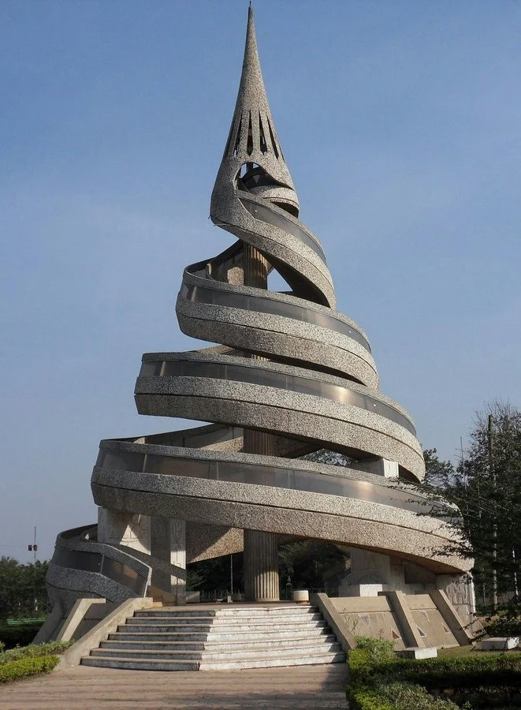

monument historique
.jpeg)
Le Musée des Rois Bamoun est l’un des monuments culturels les plus impressionnants du Cameroun 🇨🇲. Il se trouve à Foumban, dans la région de l’Ouest, juste à côté du palais royal des sultans bamoun. Ce musée attire immédiatement l’attention grâce à son architecture unique et spectaculaire. Le bâtiment a la forme d’une grande araignée posée sur un serpent à deux têtes, ce qui le rend très célèbre au Cameroun et même à l’étranger.

Le Monument de la Réunification est l’un des monuments les plus célèbres du Cameroun. Il est situé à Yaoundé, la capitale politique du pays. Le monument est constitué d’une grande tour en forme de spirale, avec deux rampes d’escaliers qui s’enroulent autour d’un pilier central. Ces deux escaliers montent séparément puis se rejoignent au sommet, ce qui donne une image très symbolique. À l’entrée, on trouve aussi une statue d’un vieillard tenant un flambeau, entouré de plusieurs enfants. Le vieillard représente la sagesse, les traditions et les générations qui ont lutté pour l’avenir du pays, tandis que les enfants symbolisent la jeunesse et le futur du Cameroun..
.jpeg)
Le Musée National du Cameroun est l’un des monuments culturels les plus importants du pays. Il est situé à Yaoundé, près du centre-ville. Le bâtiment est vaste, imposant et entouré d’un grand espace vert. À l’intérieur, on trouve plusieurs salles d’exposition qui présentent l’histoire du Cameroun depuis les temps anciens jusqu’à l’époque moderne.
.jpeg)
Cette cathédrale est l’une des plus grandes églises du Cameroun.Son histoire commence pendant la Seconde Guerre mondiale. Un évêque nommé François-Xavier Vogt avait promis de construire un sanctuaire à la Vierge Marie si le Cameroun sortait sans grands dommages de la guerre. La première pierre fut posée en 1952.
.jpeg)
Le Monument du Nouveau Liberté est une sculpture monumentale située au rond-point Deïdo, à Douala, dans la région du Littoral au Cameroun. Œuvre de l’artiste camerounais Joseph-Francis Sumégné, elle symbolise la résilience, la créativité et la liberté du peuple camerounais. Ce monument est devenu un repère visuel majeur et un emblème culturel de la ville de Douala.
.jpeg)
Le Monument de l’Unité est un monument moderne situé à Yaoundé. Il est composé de 10 piliers verticaux entourant une structure centrale surmontée d’une étoile dorée. Autour du monument, on peut voir des lions dorés, symbole de force et de courage. Le style architectural est très moderne et impressionnant, surtout la nuit avec l’éclairage.
paysage naturel
.webp)
Mont Cameroun : volcan actif et plus haut sommet du pays.
.webp)
La forêt équatoriale du Cameroun, deuxième plus grand massif forestier d'Afrique après la RDC, couvre environ 22,5 millions d'hectares, principalement dans le sud et l'est
.webp)
Littoral : plages magnifiques et climat tropical.
.webp)
.Forêt tropicale dense et pleine de biodiversité.
.webp)
Cascades naturelles très impressionnantes du Cameroun
.jpeg)
Savane du nord riche en faune sauvage